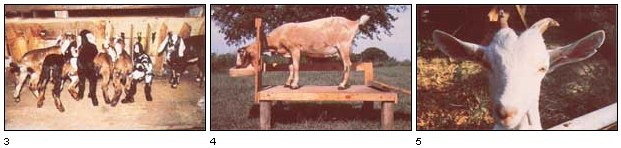

Raising Goats My Way (If I Could Do It Over Again):
September/October 1983
by Randy Kidd
OK , fellow goat enthusiasts, here's the second half of my discourse concerning some reconsidered dos and don'ts of keeping caprine critters. As those of you who read Part I will likely recall, I've already discussed the number of does that (I think) make up the perfect farmstead herd ... told you how to avoid the pitfalls of "goatflation" . . . recommended qualities to look for when buying a good milk animal ... and advised you on where to keep your newly acquired charges once you get them home. (If you haven't looked at the first half of this feature, I suggest you pick up a copy of MOTHER NO. 82 and turn to page 34.)
And now that the preliminaries are out of the way, we can get on to some of the finer points of goat husbandry ... namely, breeding, milking, kid care, and home veterinary treatment. But before we launch into those subjects, let me reiterate something I said in Part 1: The following hints (most of which I've learned the hard way!) are meant only as suggestions-not as steadfast rules?to help you discover the most efficient and simplest means of rearing and handling your own milkers.
BRING ON THE KIDS
I used to tell folks to keep a buck around their homestead for breeding purposes. Now, however-having long tried in vain to deal with the cantankerous nature and malodrous scent of the male goat?I have to re tract that bit of poorly conceived advice, and offer in its place another, much more sensible, plan!
Why not get together with half a dozen or so other nanny owners in your community, and pool all of your resources to buy one exemplary buck that can serve all of your does. Then-and this is the tricky part!?see if you can't talk one of those other goat lovers into boarding (with the expenses shared by everyone, of course) "old whisker face" on his or her farm. Naturally, you'll have to go to the trouble of hauling your does over to this benevolent neighbor's barn at breeding time ... but-take my word for it that's a very small price to pay for keeping your backyard clean-smelling!
If you can't find someone magnanimous enough to care for a "collective" buck, I'd suggest you utilize artificial insemination (Al). This method is well suited to goat raising and is the very best-and least expensive -way to upgrade your herd. (Semen from some of the top breeders in the country is available for as little as $5 to $25 a unit.) Unfortunately, Al requires that you artificially inseminate your does, and it's sometimes hard to catch the females in heat ... but you'll have to in order to do this. In fact, some gals won't come into season unless there's a male goat on the premises. However, you can fool them. Just take an old rag and-during the fall breeding period?wipe it on a buck's head, where the horns should be, and along its hocks. Then hang the dripping-wit h? maleness cloth where the does can smell it. Within 48 to 72 hours, your ladies should be in heat.
Incidentally, while we're on the subject of breeding, there are two often- recommended, tricks" that I would not advise. First of all, don't try (by artificially creating a facsimile of the declining daylight hours typical of "heat" season) to bring your does into heat during their off-breeding period in the spring. I don't feel that the results warrant all the extra time and effort that are involved in this particular technique. You see, the percentage of does that settle (get pregnant) when bred under such conditions is usually small, and oftentimes the buck just isn't interested in mating during the spring.
Second, I don't recommend the use of hormones to synchronize heat cycles ... to promote superovulation (an increase in the number of ova released) ... or to induce labor. Although such substances have been used successfully with cattle, they've been tested here at the Kansas State University College of Veterinary Medicine ... and early results indicate that they're ineffective, and even harmful, when given to goats. (In fact, some does have developed cystic ovaries as a result of hormones.) So when breeding your caprine gals, stick as close as you can to the procedures nature intended.
ON TO THE MILK FACTORY
Heretofore, in my reports in the pages of THE MOTHER EARTH NEWS$, I haven't really paid a whole lot of attention to the all-important subject of milking. But now I'd like to take the time to offer a few pointers on this topic!
First of all, to avoid the risk of having unwanted barnyard "fumes" taint your fresh milk (and also to allow yourself more comfort), you might want to milk your does in an area that's separate from their pens. And, having sampled the "joys" of scrunching into a shed and kneeling on the hard ground to get at my goats' udders, I can tell you that I'm now a real milking-stand enthusiast! These easy-to-construct (see No. 61, page 176) goat restrainers can be placed almost anywhere, and they can turn a potentially back-straining job into an easy sit-on-a-stool task ... since milking time rolls around twice a day, that's quite a plus!
And don't worry about how your animals might take to using one of these stands, either. If you make sure there's always plenty of food in the bin for them to munch on, the does will just hop right up and peacefully eat away while you do the milking. As an added bonus, such a structure can serve the dual purpose of holding your critters when you need to trim their hooves ... or vaccinate them ... or perform any other unpleasant chore that they might not otherwise be willing to stand still for.
Aside from using a milking stand (a tool that a lot of goatkeepers don't take advantage of), most of my milking techniques are pretty standard. Be sure to clean each doe's udder with a fresh paper towel saturated in disinfectant, before you begin. Then strip off the first few streams of milk into a black strip cup to check for the cheese-like chunks or stringy material that are signs of mastitis (an inflammation of the mammary glands). If the milk is OK, continue to work ... straining the liquid through a clean (which means that you have to thoroughly wash it after each milking!) cheesecloth into a sanitized metal container. [EDITOR'S NOTE. Some sources advise that you use tin or stainless steel strainers that are specifically made for your pail-or even disposable strainers?rather than cheesecloth.] When you're finished milking-and before you send that little mama back to her pen-dip each of her teats in a specially prepared solution (ask your vet for a recommendation) to help protect her against mastitis.
That done, pour the milk into sterilized glass containers (with lids), and place the covered jars in a refrigerator. To insure that the milk stays fresh as long as possible, some folks place the containers in an ice bath before refrigerating them ... but this process has always seemed like a lot of trouble to me. After all, unpasteurized milk?if put directly into the icebox-will remain fresh-tasting for at least three days. So I simply date each jar, and-when day number three rolls around-I give the old milk to the pigs!
(Note: Are you wondering what you'll do with your regular-and sizable-supply of nice, fresh goat's milk before day number three? Well, around our house we use it to produce delicious yogurts, custards, and ricotta cheese. Goat's milk also adds a delicate sweetness to almost any bakery or candy recipe. What's more, I'd be hardpressed to think of any better treat than a dish of homemade goat's milk ice cream!)
KID CARE
Of course, the production of milk is triggered by pregnancy ... which means that?come spring-you'll probably have some youngsters to care for. However, that extra work can be quite worthwhile, because if the mamas give birth to a good "crop" of quality kids, you could-by selling them?make enough money to feed your milkers (and keep your family supplied with free dairy products) for a year! With this in mind, then, you'll want to do everything possible to make sure that your valuable goatlings remain robust and healthy.
Start your kid-care program by seeing to it that each young'un gets a healthy dose of colostrum (its mother's first nutrient-rich and anti-body-laden milk) within the first 12 hours after birth. From then on, the little guys and gals will need to have their mom's milk fed to them three times a day, from a soda bottle (or similar container) fitted with a special lamb's nipple. Of course, you could let them nurse from the doe herself, but-if you do-you'll likely find that they're much harder to wean when necessary. Besides, almost any kid will take to a bottle with no problem, as long as its mother is nearby to provide company and reassurance.
During the first week, feed your young animals 6 to 8 ounces of milk, three times a day, and then increase the dosage to 10 to 12 ounces. (Be careful not to overfeed, though, as that could result in a case of "the runs"!) Once the kids are about two weeks old-and while they're still nursing?you can help them start to develop their rumens, that is, their adult stomachs, by providing them with access to tasty grains (mine like cracked corn and rolled oats) and fresh, leafy hay. Be sure, also, to put a new section of hay in their midst daily, and to change the grain regularly, to accommodate any particularly fastidious eaters.
In addition to maintaining an appropriate feeding schedule for your doelings, you'll need to see to it that the youngsters have ample pen space and adequate shelter. I feel that stock panels, though they are costly, are effective enough to be considered practical goat fencing. However, during your kids' first month, you can make do by simply putting up a 32-inch hog stock-panel fence (which you can easily step over). Also, you can save yourself a little more money if, instead of building sheds for the kids, you house them in old 4' X 8' wooden packing crates (equipped with lots of regularly changed straw bedding).
I make a practice of penning all my young goats together, on one lot, until they're ready to be weaned at three to four months. Then I move them onto another section of ground (remember, stock panels are easy to relocate). However, I suggest that you not put your juveniles in with the adults until the youngsters reach breeding age (when they're six to eight months old). Also keep in mind that next year's kids shouldn't be kept on the same terrain as were this season's. In fact, you should wait at least three years before using the same ground for goat turf again. By rotating the kid lots in this manner and keeping the offspring away from the grown-ups, you can all but eliminate the goat-killing disease coccidiosis. (Note: As a further precaution against this problem, burn the packing crate sheds as soon as the kids have outgrown them.)
Since, in issue 65, I've already explained the techniques for disbudding and castrating kids (and since I'm still satisfied with that information), I won't take up space to discuss them again. I will add, though, that now (having decided not to board a buck) I usually slaughter all my male kids either immediately after birth or within six months (to give them a chance to fatten up). Perhaps this sounds harsh, but adding chevon to the freezer is one good way to fight the rising tide of "goatflation" (see Part I for other ways to beat this checking-account drainer).
THE THREE PRIME FEEDING PERIODS
There are three nutritionally critical periods in a goat's life: [1] a kid's first few months ... [2] Mama's first two months of lactation ... and [3] a doe's dry months. If you maintain adequate records (so you'll be prepared for such periods before they come around) and feed your animals according to their needs during each of these times, you should be able to keep your critters in pretty good fiddle.
We've already discussed a newborn's dietary requirements, so I'll move on to the second crucial feeding period: the initial months of lactation. During this time, a doe will produce the maximum amount of milk that she's capable of. Therefore, in order to fuel her "internal factory" sufficiently, she has to eat top-quality grain and hay. Normally, you can figure that a lactating female should get about one-third to one-half pound of grain for each pound of milk she yields in a day. However, when she's at her milk-making peak, it can be nigh onto impossible to satisfy all her energy requirements. If that seems to be the case, just be sure that during this time you give her the best grain and hay (preferably alfalfa) you can afford, and that you allow her plenty of time to be able to eat as much of her food as she can pack in!
Hint: The grain mix should be from 16% to 18% protein if it's fed with a low-protein hay (such as timothy or prairie hay). But should you be feeding a high-energy hay (like alfalfa), you'll be able to get by with a grain that's only 12% to 15% protein. Using a bit of "guest imation", then, you can probably figure that an average milker will need about 1,000 pounds of hay a year (that's around 3 pounds a day) and roughly 1,000 pounds of grain ... which should work out to be approximately 1/2 pound of grain for each of the 2,000 pounds of milk she gives! Better producers will, naturally, need additional feed.
The third dietary prime time in a goat's life occurs during the two months prior to kidding. You can do a lot to insure that your doe has an easy delivery, healthy babies, and a problemf-ree lactation ... just by keeping her in good flesh (without letting her get downright fat) and by making sure her calcium intake is low during this period. Naturally, a pregnant doe will put on "kid pounds" . . . but watch her ribs right behind her shoulders, because she shouldn't put on so much fat that they "disappear". (In general, if you feed a doe a couple of pounds of grain each day and all the hay she wants, her developing babies will stay healthy and her figure will remain fit and trim.)
Then, in order to keep your mother-to-be's calcium intake in line, simply feed her a mineral mix that doesn't contain that substance! Also, feed her only a low-calcium, nonleguminous hay, such as timothy or prairie hay. After the kids arrive, switch Mama to a mix that does have calcium in it (with a calcium: phosphorus ratio of 1:1 to 2: 1) and put her on a better-quality hay.
And always keep in mind that goats need lots of water and exercise! One doe can drink as much as two to five gallons of liquid on a cool day ... so make sure there's plenty of fresh water available to your herd at all times. You might also want to take your does for an out-of-pen stroll (preferably every day). However, even the trek from the yard to the milking area is better than no exercise at all.
MEDICAL ASPECTS
Now that your goats are eating well and are getting a lot of exercise, it's time to attend to their medical needs. To begin with -as you probably already know-every goatherd should be able to trim feet, vaccinate, worm, disbud, and castrate (see MOTHER NO. 65, page 74, for further information). And although there isn't enough room left to go into a step-by-step description of each of these procedures, there is just the right amount of space left for me to list what I think are the four main points of a good at-home goat-care program.
Vaccinations. Kids need Clostridium perfringens C and D plus a tetanus toxoid when they reach six to eight weeks of age (with a repeat dose of each a month later).
Furthermore, adult animals have to have an annual booster for both of these vaccinations 30 days prior to kidding.
Wormers. Goats must be wormed in the spring and fall (or more often, if the herd is confined to a small area). If you use a variety of anthelmintics (worm medicines), the parasites will be less likely to develop a resistance to any one substance. The easiest wormers to administer are those that are available in paste form (boluses are nearly impossible to get down a goat's gullet, and wormers that are added to the feed are often ignored).
Vitamin E/selenium. A vitamin E/ selenium injection should be given to a doe 30 days before she's due to kid if you live in a region typified by a selenium deficiency ... and the youngsters should receive a shot when they're three weeks old.
An annual visit from your favorite vet. No matter how proficient a backyard doctor you are, you (and your goats!) should still take advantage of the knowledge and experience of a certified vet once a year. He or she can help you pinpoint existing or potential problems, and can assist you in setting up a good healthcare program for your animals.
THE LAST WORD?
All right, I've had my second chance to update my earlier advice on goatkeeping. And I hope that my hints (all of which are the result of long experience) have been helpful to you ... because now it's your turn! Get out there in the goat pen and start developing your own individual techniques for tending to that herd of capricious (and lovable) caprine critters!
EDITOR'S NOTE: Revisions notwithstanding, Randy Kidd's original article in MOTHER NO. 65, "How to Raise Healthy Goats", presents a thorough discussion of getting started with dairy goats. For directions on how to order back issues, turn to page 180.
In addition, here are some sourcebooks that goat owners (or would-be herders) might find valuable:
Raising Milk Goats the Modern Way by Jerry Belanger (Garden Way, $5.95). This paperback, which was written by the editor and publisher of Countryside magazine, covers the basics, discusses different breeds, and then dots the i's on various aspects of successful goatkeeping. It should be useful to beginner and old-timer alike.
Another helpful book-which, like Belanger's, takes the approach that goats are ideal for home food production-is Raising Goats: The Backyard Dairy Alternative by David B. Weems (Tab, $12.95). This authoritative guide goes into depth on selecting, raising, caring for milking, and breeding goats.
Finally, The Whole Goat Catalog (revised edition) edited by Linda S. Campbell (Gerard, $6.95) provides a quick reference to caprine supplies and services, addresses of pertinent government agencies, plus basic herd-management practices. All of the books mentioned above are available-for their list prices plus $1.25 shipping and handling for one or two books, $2. 00 for three or more-from Mother's Bookshelf, 105 Stoney Mountain Road, Hendersonville, North Carolina 28791.
|
1] Goats are terrific companions that'll provide you with gallons of wholesome fresh milk if you take good care of them! [2] Trim their hooves regularly |
 [3] and make sure to have lots of fresh food and water available. [4] A milking stand enables you to hold your goat still during milking, trimming, etc. [5] Here's a face only a mother could trust. In other words, don't try to raise a buck! |
 |